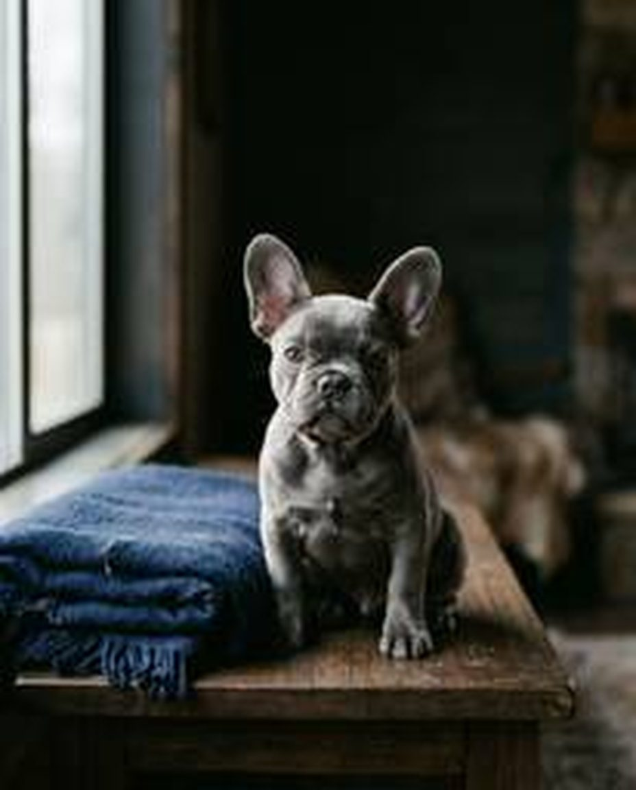

Мальтипу
Кудрявый компаньон размером с кошку. Почти не линяет и ходит за вами из комнаты в комнату.
- Вес
- 2–5 кг
- Рост в холке
- 20–35 см
- Живут
- 12–15 лет
В наличии: 7 щенков
Питомник щенков · Москва
Мальтипу, французские бульдоги, той-пудели и бордер-колли. Растим щенков дома и отдаём с документами, прививками по возрасту и договором.
Цену и видео щенка пришлём в мессенджер — обычно за 15 минут.

Породы
Мы не берёмся за всё сразу. Четыре породы — чтобы знать каждую до мелочей: характер, здоровье, уход и то, с кем ей будет хорошо.
Кудрявый компаньон размером с кошку. Почти не линяет и ходит за вами из комнаты в комнату.

Французский бульдог
Спокойный городской друг с ушами-локаторами. Любит диван, неспешные прогулки и вашу компанию.

Маленький пудель с умом большой собаки. Быстро учится, а кудрявая шерсть практически не линяет.

Пастушья собака с острым умом. Для тех, кто готов каждый день бегать, гулять в лесу и учить новые команды.
Каталог
Каждого щенка покажем по видео и расскажем о его характере и родителях. Цену и условия брони пришлём в мессенджер.
В наличии
 В наличии
В наличии
 В наличии
В наличии
 Забронирована
Забронирована
 В наличии
Скоро в продаже
В наличии
Скоро в продаже
 В наличии
Забронирована
В наличии
Забронирована
Сейчас щенков этой породы нет в наличии. Оставьте заявку — напишем, когда появится новый помёт.
С чем поможем
Щенок — это на 10–16 лет. Поэтому мы отвечаем не только за день покупки.
Ветпаспорт, договор и метрика РКФ — у мальтипу вместо неё родословные родителей. Всё, что мы обещаем, записано на бумаге.
Что входит в документыПеред переездом щенка осматривает ветеринар. Прививки по возрасту, обработки от паразитов и заключение врача — в ветпаспорте.
Как мы следим за здоровьем
Покажем щенка вживую: как он играет, ест и откликается на голос. Звоните столько раз, сколько нужно, чтобы решиться.
Выбрать щенка
Привезём щенка по Москве, в Подмосковье и другие города. В дороге он не один, а вам приходят фото и короткие видео.
Способы доставки
Понравился щенок — закрепим его за вами по договору и предоплате. Остаток можно оплатить частями через банк-партнёр.
Условия брониПомогаем и после переезда: с кормом, пелёнкой, первой стрижкой и графиком прививок. Напишите через месяц или через пять лет — ответим.
Советы на первые недели4 шага
От заявки до первого вечера дома — четыре шага.
Посмотрите щенков в наличии или пройдите тест — он подскажет подходящую породу.
Куратор покажет щенка, его маму и документы и ответит на вопросы.
Подпишем договор, и после предоплаты щенок закреплён только за вами.
Приезжайте в питомник или встречайте доставку: щенок приедет с документами и памяткой на первые дни.

О питомнике
Мамы и папы наших щенков — домашние собаки с родословными РКФ. Перед вязкой каждый производитель проходит осмотр ветеринара и ДНК-тесты на болезни, типичные для его породы. Результаты покажем по запросу.
Выпускники живут в Москве, Петербурге, Казани и ещё в шести десятках городов. Хозяева присылают нам фото, и по ним видно, какими вырастают щенки. Хотите поговорить с владельцем — дадим контакты тех, кто согласен рассказать о своей собаке.
Подбор породы
Сравните четыре породы по главному. Если сомневаетесь, короткий тест подскажет за 2 минуты.
| Мальтипу | Французский бульдог | Той-пудель | Бордер-колли | |
|---|---|---|---|---|
| Размер | Маленький, 20–35 см | Небольшой, 24–35 см | Миниатюрный, до 28 см | Средний, 46–56 см |
| Вес | 2–5 кг, стандарт до 7 кг | 8–14 кг | 2–4 кг | 14–22 кг |
| Шерсть и линька | Мягкая, почти не линяет | Короткая, линяет умеренно | Кудрявая, практически не линяет | С подшёрстком, линяет заметно |
| Активность | Средняя: игры и прогулки | Невысокая: спокойные прогулки | Средняя: любит учиться | Очень высокая: 2+ часа в день |
| Для детей | Да, с бережными детьми | Да, терпелив и устойчив | Лучше со школьниками | Для активных детей постарше |
| Для квартиры | Да | Да, но беречь от жары | Да | Только с ежедневным спортом |
Полностью гипоаллергенных собак не бывает: аллергию вызывают белки кожи и слюны, а не только шерсть. Если в семье аллергия, сначала познакомьтесь со щенком вживую.
Доставка
Привезём щенка по Москве и области, в Санкт-Петербург и ещё в 60+ городов. В дороге щенок не один: с ним куратор или сопровождающий, а вы получаете фото и видео.
Везём от двери до двери по Москве, области и в города до 1500 км. Щенок едет в переноске, с остановками на воду и отдых.
Честно: Это дольше самолёта, зато без пересадок и багажных отсеков.
Сопровождающий везёт щенка в переноске у своих ног. Удобно для дальних городов.
Честно: В салон берут собак весом с переноской обычно до 8 кг — точный лимит зависит от авиакомпании. Так летят мальтипу, той-пудели и щенки французов. Бордер-колли чаще едут на машине.
Едем со щенком в купе — спокойно и без спешки. Подходит, если вы хотите забрать щенка сами и вернуться домой поездом.
Честно: Не во всех поездах и вагонах можно ехать с собакой, а для щенка покрупнее иногда нужно выкупить купе целиком. Маршрут подбираем заранее.

Привезём щенка точно к празднику, а заранее поможем понять, готова ли семья к новому другу.
Как подарить щенкаЛежанка, переноска, миски, пелёнки и корм, к которому щенок уже привык, — соберём заранее, чтобы первый вечер дома прошёл спокойно.
Собрать набор
Отзывы
Пишут те, чьи щенки уже дома.
Все отзывы
Выбирали почти неделю, и каждый вечер нам показывали двух щенков по видео. Взяли Боню — она первой подбежала к телефону. Дома с первой ночи спала на лежанке, к пелёнке привыкла за неделю. Куратор до сих пор отвечает на мои вопросы про стрижку.
Боялся везти щенка из Москвы зимой. Привезли на машине, по дороге каждые пару часов присылали видео. Тайсон приехал спокойный, с ветпаспортом и метрикой. Сейчас ему год, храпит, как и положено французу.
Брали той-пуделя для мамы. Нас честно отговорили от самого крошечного щенка и подобрали девочку покрепче. Чапа летела в салоне с сопровождающим и перенесла дорогу спокойно. Мама говорит, что теперь гуляет вдвое больше.
Сначала нас подробно расспросили: сколько гуляем, есть ли время на занятия. Было неожиданно, но потом поняли зачем. Рэю восемь месяцев, ходим на аджилити, тренер доволен.
Бронировали за месяц: внесли предоплату, остаток оплатили при получении. В договоре всё расписано, сюрпризов не было. Хотелось бы больше фото в первые недели, но это мелочь.
Ездили в питомник смотреть вживую. Чисто, щенки с мамой, никто не торопил с решением. Луна теперь ходит хвостом за нашим сыном, а вечером засыпает у него в ногах.
Блог
 7 мин
7 мин
Кому подойдёт мальтипу, сколько внимания ему нужно и чего ждать от характера.
8 мин
Как беречь француза от жары, чем кормить щенка и как продлить ему жизнь.
6 мин
Почему той-пудель так быстро учится и с кем ему будет хорошо.
 9 мин
9 мин
Вопросы, документы и признаки здоровья, на которые стоит смотреть до брони.
FAQ
Отвечаем ежедневно с 9:00 до 21:00, обычно за 15 минут. Если пишете ночью — ответим утром.
+7 (495) 123-45-67От породы, у мальтипу — ещё от поколения (F1, F1b, F2) и размера. Влияют окрас, пол, родители и перспектива щенка: домашний любимец, разведение или выставки. Точную цену конкретного щенка пришлём в мессенджер сразу после заявки.
Договор купли-продажи и ветеринарный паспорт с отметками о прививках. Щенки французского бульдога, той-пуделя и бордер-колли получают метрику РКФ — позже её меняют на родословную. Мальтипу — гибрид, РКФ его не регистрирует, поэтому к щенку прилагаем копии родословных родителей.
Не раньше 10 недель. К этому времени щенок привит по возрасту, осмотрен ветеринаром и уверенно ест сам. Точную дату переезда согласуем при брони.
Комплексная прививка по возрасту — от чумы, парвовирусного энтерита, аденовироза, парагриппа и лептоспироза — и обработка от паразитов. Все отметки есть в ветпаспорте. График следующих прививок, включая прививку от бешенства, дадим с собой и напомним о сроках.
Да, по всей России: на машине с куратором, самолётом в салоне или поездом. Способ подбираем под породу и возраст щенка. Сроки и стоимость доставки назовём при брони.
Да. Подписываем договор, вы вносите предоплату — и щенок закреплён за вами, другим покупателям мы его больше не показываем. Размер предоплаты и условия её возврата прописаны в договоре.
Да, через банк-партнёр на 6 или 12 месяцев. Заявку оформляем онлайн, решение банк присылает в тот же день. Условия и возможную переплату расскажем до оформления.
В договоре есть гарантия на врождённые и генетические заболевания — [срок]. Если ветеринар подтвердит такое заболевание, вернём деньги или предложим другого щенка. Если изменились обстоятельства, позвоните куратору: поможем найти щенку новую семью.
Да, по предварительной записи. Покажем щенков, их маму и условия, в которых они растут. Просим в этот день не заходить в другие питомники и зоомагазины — так мы бережём малышей от инфекций.
Puppy House — питомник собак в Москве. Мы разводим четыре породы: мальтипу, французского бульдога, той-пуделя и бордер-колли. Щенки растут в доме рядом с людьми и привыкают к звукам квартиры, рукам и пелёнке. Поэтому переезд в новую семью проходит спокойнее. Купить щенка у нас можно лично в Москве или с доставкой в другой город.
Щенки мальтипу подойдут тем, кому нужен маленький ласковый компаньон. Мальтипу — помесь мальтийской болонки и той- или миниатюрного пуделя. У нас есть поколения F1 и F1b: взрослые мини-мальтипу весят 2–5 кг, стандартные — до 7 кг. Шерсть почти не линяет, но абсолютно гипоаллергенных собак не бывает: реакция зависит от человека.
Щенки той-пуделя вырастают до 28 см в холке и весят 2–4 кг. Той-пудель быстро учится, а его шерсть практически не линяет. Щенки французского бульдога — спокойные городские собаки весом 8–14 кг. Им хватает обычных прогулок, но летом их нужно беречь от жары. Щенки бордер-колли — для активной семьи. Это пастушья порода ростом 46–56 см в холке, с большим запасом энергии. Без ежедневных занятий бордер-колли скучает.
Каждый щенок уезжает с договором купли-продажи и ветеринарным паспортом. В паспорте — отметки о прививках по возрасту и обработках от паразитов. Щенки французского бульдога, той-пуделя и бордер-колли получают метрику РКФ, которую позже меняют на родословную. Мальтипу — гибрид, РКФ его не регистрирует, поэтому к щенку прилагаем копии родословных родителей. Перед продажей каждого щенка осматривает ветеринар, а схему следующих прививок, включая прививку от бешенства, мы даём с собой.
Начните с образа жизни, а не с фото. Сколько вы гуляете, есть ли дети, какая у вас квартира — от этого зависит, какая порода подойдёт. Если сомневаетесь, пройдите тест подбора породы или спросите куратора. Смотрите и на самого щенка: здоровый малыш любопытен, охотно идёт на контакт, у него чистые глаза и уши. Мы покажем щенка по видеосвязи и расскажем о его характере и родителях. Цена зависит от породы, поколения, окраса, пола и перспектив щенка — назовём её сразу после заявки.
Привезём щенка на машине с куратором, отправим самолётом в салоне с сопровождающим или поездом. Способ подбираем под породу и возраст: маленьким щенкам подходит перелёт в салоне, бордер-колли обычно едут на машине. В дороге присылаем фото и видео, а после приезда остаёмся на связи.
Если вы живёте в Москве или Подмосковье, приезжайте в питомник по записи: познакомьтесь со щенками, посмотрите на маму, обсудите уход. Или выберите щенка по видео — привезём его к дому в Москве, Химках, Красногорске, Балашихе, Подольске или другом городе области. Оставьте заявку, и куратор пришлёт щенков в наличии с ценами и свежими видео.
Заявка
Пришлём щенков в наличии, цены и свежие видео. Подборка ни к чему не обязывает.